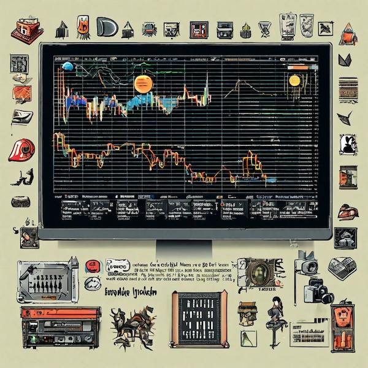
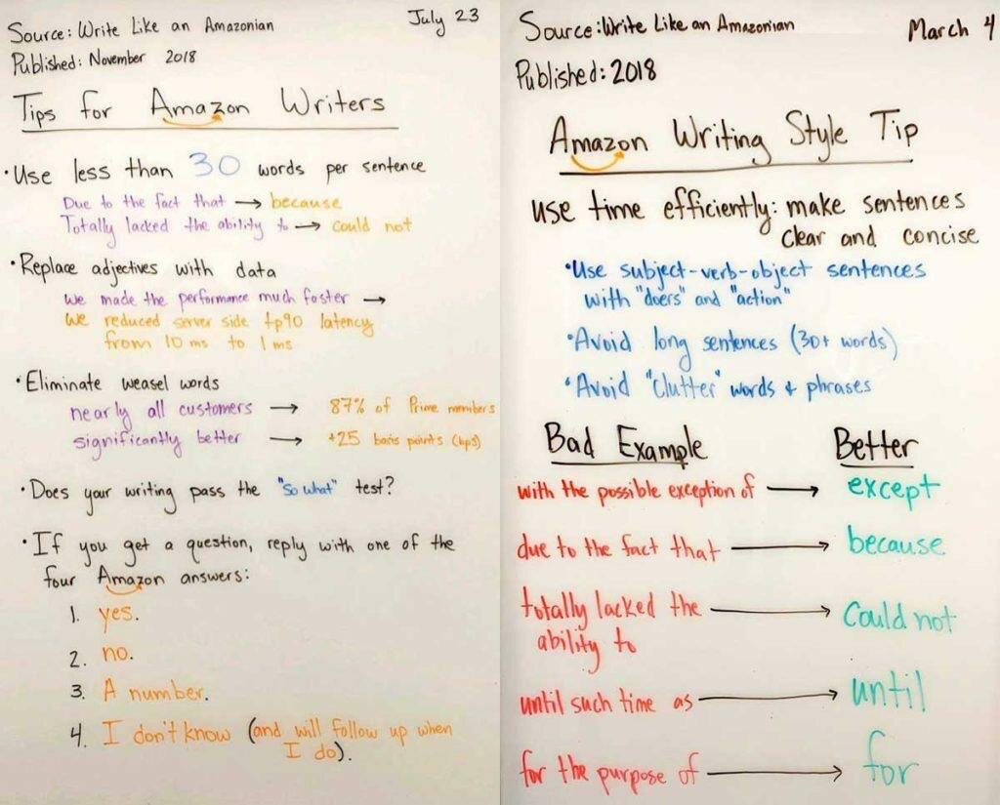
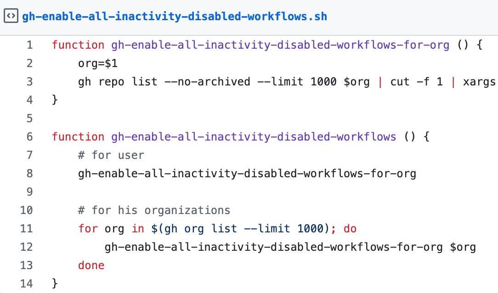
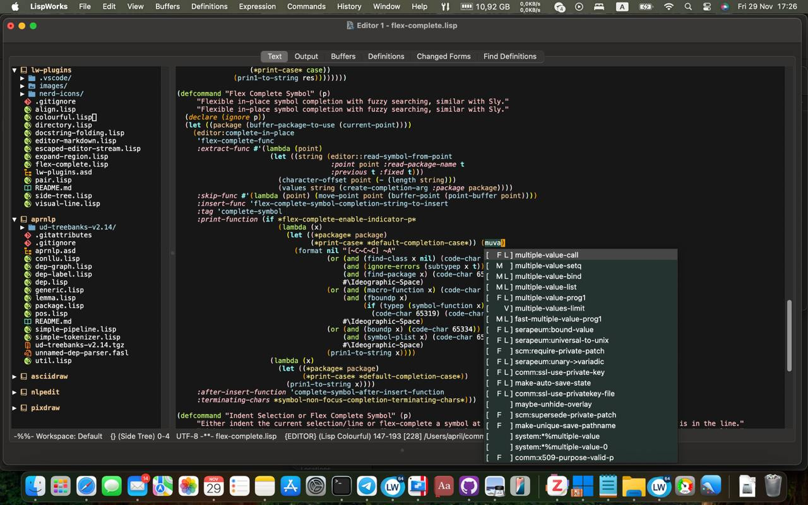
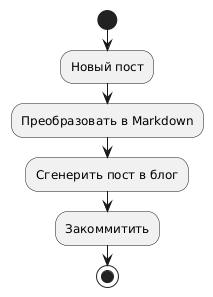

Страница 6
Как нейросети строить умный дом помогают!
posted on 2025-02-22

Раньше я почему-то считал, что нейросети годны только чтобы тексты и картинки генерить, но недавно посмотрел пару вебинаров про то, какие ещё задачи можно решать с помощью LLM и прям воодушевился! Один из возможных сценариев использования ChatGPT, который там приводился, это использовать нейросеть в роли учителя. При чём не важно в какую тему хочешь погрузиться, математика это, программирование или ещё что-то. Главное что она умеет корректироваться и отвечать на дополнительные вопросы. Хотя конечно и лажу может генерить, тут уж принцип "доверяй но проверяй" никто не отменял.
Мониторинг проектов в Yandex Cloud
posted on 2025-02-16

В последнее время я стараюсь максимально стандартизировать инфраструктуру своих проектов. Особенно это касается трех вещей:
- деплоя
- мониторинга
- логов
Шпаргалка по использованию Roswell и Qlot в Common Lisp проектах
posted on 2025-02-16
Вчера в телеграм-чате LispForever, посвященном Сommon Lisp просили подсказать, какой подход лучше использовать для запуска лиспа. Мнения разделились. Кто-то рекомендовал использовать Roswell, кто-то наоборот - был против. Я же Roswell люблю по той причине, что он позволяет легко и просто устанавливать разные реализации Common Lisp и переключаться между ними. Это особенно удобно, когда у тебя куча проектов, и каждый может использовать свою версию CL.
SEO для Telegram канала
posted on 2025-02-14
Недавно я писал про то, что сделал чат-бота, который умеет публиковать посты из телеграм канала на сайте. Основная цель этого бота в том, чтобы привлечь в канал пользователь из органического поиска. SEO штука не быстрая, пока не понятно насколько хорошо это работает, ведь сначала надо чтобы поисковые боты проиндексировали новый контент, добавили его в выдачу, да и над раскруткой сайта в целом тоже надо работать.
Теория связанности всего только лишь теория?
posted on 2025-02-12

В одном из первых постов, я писл что 40Ants это холистическое IT агенство. И я не ошибся. Сегодня я получил подтверждение того, что "всё связанно" (так кстати, и Дирк Джентли говорил).
Как включать протухшие workflow на GitHub Actions?
posted on 2025-02-11

Я не знаю, может это со мной что не так, но иногда мне приходят в голову идеи, реализация которых возможно никому на свете кроме меня и не нужна. Вот одна из таких идей.
Красота для LispWorks
posted on 2025-01-31

Когда я впервые увидел LispWorks IDE, она показалась мне довольно непривычной и допотопной что ли. Там нет многих привычных вещей из Emacs. Но оказывается, если приложить усилия, то можно сделать из этого IDE конфетку. Но вероятно надо быть прямо очень мотивированным к тому, чтобы писать код именно в интерфейсе LispWorks, а не подключившись к нему из Emacs.
Maxima скомпилировали для запуска в браузере!
posted on 2025-01-29
Maxima это программа для работы с математическими выражениями. Примечательно то, что эта система написана на Common Lisp.
Прототип Static Site Bot
posted on 2025-01-28

Возможно некоторые из вас помнят, как почти год назад я писал про идею сервиса, который умеет транслировать контент из телеграм канала в статический вебсайт. Если не помните, то вот ссылка: https://40ants.com/ru/posts/telegram-reposter/
Почему GC SBCL может не освобождать память?
posted on 2025-01-18
Последнее время я работаю над новой версией фреймфорка для создания Telegram ботов. Этот фреймворк использует библиотеку реализующую акторы. И нем обнаружился досадный баг, который я намеревался исправить. Однако в процессе исправления оказалось, что оно может повлиять на производительность. Хорошо что у автора отыскался benchmark с помощью которого можно проверить скорость работы актора.
Created with passion by 40Ants